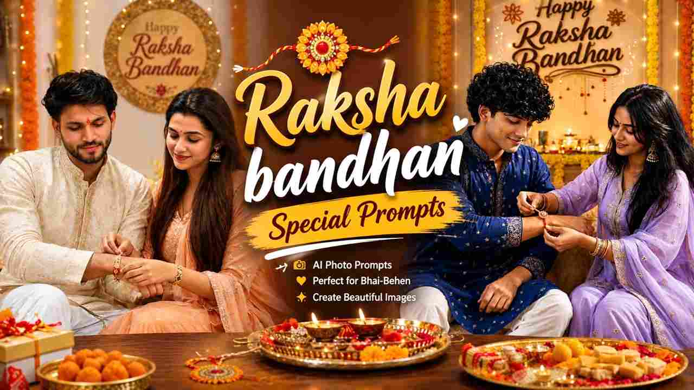
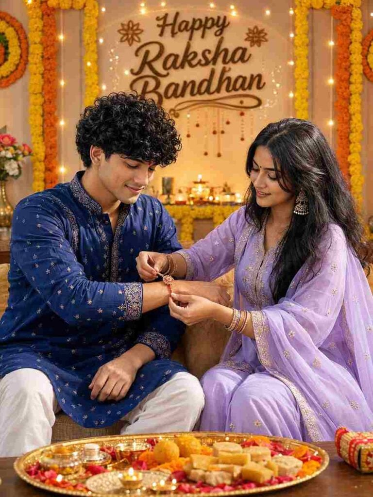
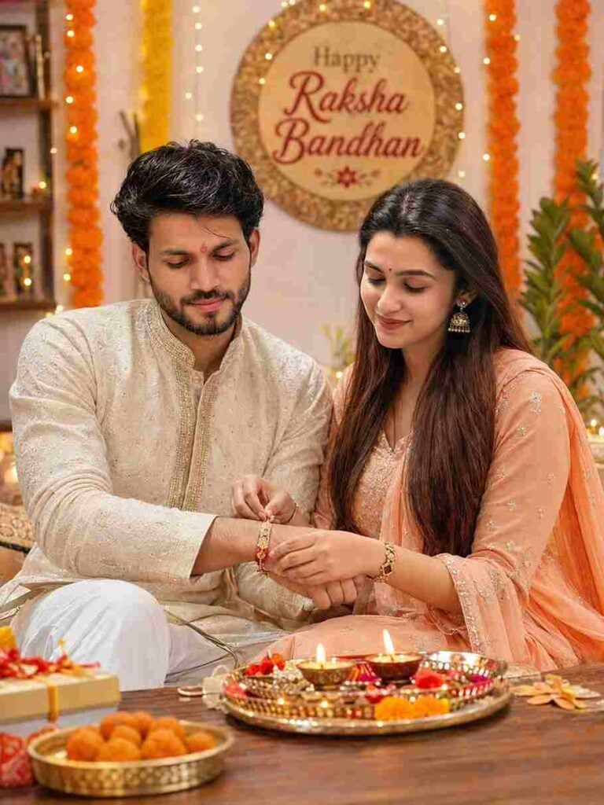

Home / Raksha Bandhan AI Photo Editing Prompts 2026
Raksha Bandhan AI Photo Editing Prompts 2026
By Prompt Library•30 August 2026

Raksha Bandhan is a beautiful festival that celebrates the special bond between brothers and sisters, and AI photo editing makes it easier to turn your favorite memories into creative festive portraits. With Raksha Bandhan AI Photo Editing Prompts 2026, you can transform a normal brother-sister photo into a realistic traditional celebration with beautiful outfits, Rakhi decorations, flowers, warm lights, and cinematic photography. These AI prompts are useful for creating Instagram posts, WhatsApp status images, Facebook posts, and special family memories. You only need a clear reference photo and a suitable AI image-generation tool to get started.
Why Do We Celebrate Raksha Bandhan Every Year?
Raksha Bandhan is celebrated every year to honor the special bond of love, care, and respect between brothers and sisters. On this festival, sisters traditionally tie a Rakhi around their brothers’ wrists and pray for their happiness, success, and well-being, while brothers express their love and promise to support and protect their sisters. The festival is not only about a Rakhi or gifts but also about strengthening family relationships and creating beautiful memories together. Celebrating Raksha Bandhan every year gives siblings a special opportunity to come together, share their emotions, and appreciate the bond they have built over the years.
Create a Beautiful Raksha Bandhan AI Photo
Creating a beautiful Raksha Bandhan AI photo is simple when you have a clear reference image and a detailed prompt. You can create different scenes such as a brother and sister sitting together, celebrating the Rakhi ceremony, smiling at the camera, or sharing an emotional sibling moment. For a traditional appearance, you can add elegant Indian outfits, beautiful Rakhi decorations, flowers, diyas, festive lights, and a decorated home background. You can also choose a cinematic photography style with realistic lighting and natural skin texture. The final result can look like a professionally captured Raksha Bandhan celebration photograph.
Best Prompts for Raksha Bandhan Photo Editing
Want more awesome prompts?
Join our community and get the latest viral prompts daily.
Create a beautiful ultra-realistic Raksha Bandhan 2026 photo collage using the uploaded reference photos of the brother and sister. STRICT IDENTITY PRESERVATION: Preserve the exact facial identity, facial structure, skin tone, hairstyle, age, body proportions, and recognizable features of both people. Do not change, beautify, replace, or alter their faces. Keep them clearly recognizable as the same brother and sister in every photograph.
Create a premium, emotional and aesthetic scrapbook-style collage containing 7 different candid photographs of the same brother and sister, arranged naturally like real printed Polaroid photographs on a beautiful cream-colored handmade scrapbook background. Each photo should look like a separate authentic DSLR photograph with realistic lighting, natural expressions, accurate hands and fingers, realistic skin texture, shallow depth of field and professional photography.
TRADITIONAL OUTFITS: Dress the sister in elegant and beautiful Indian traditional clothing such as a pastel pink or lavender embroidered Anarkali suit or lehenga, with a delicate dupatta, subtle traditional jewelry, small earrings, bangles and a graceful festive look. Dress the brother in a sophisticated traditional Indian outfit such as an ivory, cream, pastel peach or light sage-green embroidered kurta with a matching pajama or churidar. The outfits should look premium, festive, realistic and coordinated without looking identical. Keep the clothing elegant and age-appropriate.
Show these 7 different Raksha Bandhan moments:
1. The sister happily tying a colorful traditional Rakhi on her brother's wrist while both smile naturally, with a decorated Raksha Bandhan thali nearby.
2. The brother lovingly looking at his sister while she smiles at him, creating a warm emotional sibling moment.
3. Both siblings standing together and posing naturally in their traditional outfits, looking happy and comfortable.
4. The sister feeding her brother traditional Indian sweets such as laddoo while both laugh and smile naturally.
5. The brother and sister playfully teasing each other and laughing together in a candid sibling moment.
6. Both siblings sitting together during the Raksha Bandhan celebration, surrounded by flowers, diyas, festive decorations and a traditional pooja thali.
7. A beautiful close-up emotional photograph focusing on the newly tied Rakhi on the brother's wrist while both siblings smile softly in the background, with realistic depth of field.
Use warm festive lighting, golden fairy lights, subtle marigold flowers, natural indoor/outdoor Indian festive surroundings, soft cinematic bokeh, realistic shadows, DSLR-quality photography, 50mm portrait photography, high dynamic range, realistic skin texture and natural color grading.
Arrange all 7 photographs at slightly different angles with realistic white Polaroid borders, paper edges, masking tape, subtle shadows and layered scrapbook details. Make the collage look like a real handmade memory scrapbook created by a loving brother and sister.
In the center, place an elegant torn handmade-paper card with beautiful handwritten-style typography saying exactly:
“Forever Fighting
Forever Caring
Forever Loving ❤️
Happy Raksha Bandhan”
Add small festive decorative elements around the collage including colorful Rakhi threads, tiny hearts, flowers, marigold petals, subtle Indian mandala patterns, traditional doodles, miniature diyas and elegant scrapbook stickers. Keep the decorations tasteful and premium, not overcrowded.
The overall mood should be warm, emotional, cute, nostalgic, festive, premium and Instagram-trending, like a viral Raksha Bandhan 2026 memory scrapbook.
FINAL QUALITY: Vertical 4:5 aspect ratio, ultra-detailed photorealism, cinematic DSLR photography, realistic Indian traditional clothing, natural skin texture, accurate facial identity in every photo, realistic hands and fingers, anatomically correct bodies, consistent brother and sister across all 7 photos, no duplicate faces, no face swapping errors, no distorted limbs, no extra fingers, no unnatural expressions, no plastic skin, no cartoon effect, no artificial-looking faces, no unnecessary text, and no spelling mistakes in the central message.

? AI PROMPT
Ultra-realistic cinematic Indian Raksha Bandhan celebration photo of a young Indian brother and sister sitting together at home. Use the uploaded reference images for both people and preserve both faces exactly with strict identity lock. Do not alter facial identity, facial features, face shape, hairstyle, skin tone, age, body proportions, or natural appearance.
The brother is wearing an elegant deep royal blue embroidered kurta with white pajama, slightly curly textured black hair, neatly groomed beard, and a small red tilak on his forehead. The sister is wearing a beautiful pastel lavender traditional salwar suit with delicate golden embroidery, matching sheer dupatta, traditional jhumka earrings, bangles, and a small red bindi.
Show the sister lovingly tying a decorative red-and-gold Rakhi on her brother's wrist while both look down at the Rakhi with warm, genuine smiles and a natural sibling bond. Keep the pose realistic and emotionally natural.
Place a traditional puja thali in the foreground on a wooden table, filled with Indian sweets, diya lamps, flowers, rice, roli, and Raksha Bandhan items.
Decorate the background with beautiful orange and yellow marigold flower garlands, warm fairy lights, glowing diyas, festive Indian decorations, and an elegant wall decoration displaying the text "Happy Raksha Bandhan".
Create a cozy, premium Indian festive-home atmosphere with warm golden cinematic lighting, soft natural shadows, realistic skin texture, authentic facial expressions, detailed traditional clothing, subtle lens flare, beautiful background bokeh, shallow depth of field, DSLR photography, 85mm lens, f/1.8, high dynamic range, photorealistic, ultra-detailed, natural colors, realistic hands and fingers, professional photography, 8K quality.
Composition: vertical 9:16 portrait, full upper-body-to-knee framing, both siblings clearly visible, balanced composition, festive background fully visible, cinematic depth, highly realistic.
Important: Keep the uploaded faces exactly the same. Change only the outfits to deep royal blue for the brother and pastel lavender for the sister. Do not change anything else.
? AI PROMPT
Create an ultra-realistic cinematic vertical 9:16 Raksha Bandhan photo using the two uploaded references. First image = sister, second image = brother. Strict identity lock: preserve both faces, facial features, skin tone, hair, age, and natural appearance exactly; change only pose, clothing, and environment.
Show them standing together at home, with the sister tying a red-and-gold Rakhi on her brother’s wrist as both look down with warm smiles. Brother: deep royal blue embroidered kurta, white pajama, curly black hair, groomed beard, red tilak. Sister: deep emerald green salwar suit with golden embroidery, matching dupatta, jhumkas, bangles, red bindi.
Add a festive puja thali with sweets, diya, and flowers, marigold garlands, fairy lights, and a wall decoration reading “Happy Raksha Bandhan.” Warm golden lighting, cinematic bokeh, realistic hands, natural expressions, DSLR 85mm, f/1.8, HDR, photorealistic, ultra-detailed, 8K, full-body/three-quarter composition.

? AI PROMPT
Ultra-realistic cinematic Indian Raksha Bandhan celebration photo of a young Indian brother and sister sitting together at home. 101% same face. The brother is wearing an elegant cream-colored embroidered kurta with white pajama, slightly curly textured black hair, neatly groomed beard, and a small red tilak on his forehead. The sister is wearing a beautiful pastel peach traditional salwar suit with delicate golden embroidery, matching dupatta, traditional jhumka earrings, bangles, and a small red bindi. The sister is lovingly tying a decorative red-and-gold Rakhi on her brother's wrist while both look down at the Rakhi with warm, genuine smiles. A traditional puja thali filled with sweets, diya lamps, flowers, and Raksha Bandhan items is placed on a wooden table in the foreground. Background decorated beautifully with orange and yellow marigold flower garlands, warm fairy lights, and an elegant wall decoration with the text "Happy Raksha Bandhan". Cozy Indian festive home atmosphere, warm golden lighting, soft cinematic bokeh, natural skin texture, realistic facial expressions, detailed traditional clothing, shallow depth of field, DSLR photography, 85mm lens, f/1.8, high dynamic range, photorealistic, ultra-detailed, 8K quality, vertical 3:4 composition.
? AI PROMPT
Ultra-realistic cinematic vertical 9:16 Raksha Bandhan family photo using the two uploaded reference images. Use the first image for the sister and second image for the brother. Preserve both faces exactly with strict identity lock—do not alter facial features, face shape, hairstyle, skin tone, age, or natural appearance.
Show the brother and sister standing together and posing naturally for a photo, smiling warmly at the camera with a loving sibling bond. The brother wears a deep royal blue embroidered kurta with white pajama, beard, curly black hair, and red tilak. The sister wears a deep emerald green embroidered salwar suit with matching dupatta, jhumkas, bangles, and red bindi. Rakhi should be visible on the brother's wrist.
Add a decorated puja thali with sweets, diya, flowers, marigold garlands, warm fairy lights, and a "Happy Raksha Bandhan" wall decoration. Cozy Indian festive home, warm golden lighting, cinematic bokeh, realistic skin and hands, DSLR 85mm, f/1.8, photorealistic, ultra-detailed, natural colors, 8K quality.
Composition: Full-body/three-quarter standing portrait, both facing the camera, relaxed natural pose, balanced festive background, 4:5 . Do not change either person's identity.
Creating a Raksha Bandhan photo with ChatGPT is very easy. Just follow the simple steps below:
Open ChatGPT and open the ChatGPT app or website.
Log In and sign in to your ChatGPT account.
Upload Photos and upload clear photos of the brother and sister.
Copy Prompt and copy the Raksha Bandhan prompt from this article.
Paste Prompt and paste it along with your uploaded photos.
Generate Image and tap the generate option and wait for the result.
Check Result and check the faces, outfits, hands, and background.
Make Changes and ask ChatGPT to correct anything that looks unnatural.
Save Photo and save the final Raksha Bandhan photo to your device.
Raksha Bandhan AI Photo Editing Ideas
There are many creative ideas you can try with Raksha Bandhan AI photo editing. You can create a traditional home celebration, luxury festive portrait, outdoor family photoshoot, emotional brother-sister moment, or colorful Rakhi ceremony. You can also experiment with different outfits such as embroidered kurtas, sherwanis, sarees, lehengas, salwar suits, and other traditional Indian clothing. For a cinematic appearance, describe soft golden lighting, realistic shadows, shallow depth of field, and professional DSLR photography. Try different poses and backgrounds while keeping the faces and natural identity consistent with your uploaded reference photos.
Tips for Better Raksha Bandhan AI Images
For better results with Raksha Bandhan AI photo editing, always use clear and high-quality reference images. Make sure the faces are visible and not covered by sunglasses, hands, heavy shadows, or other objects. If you are using separate photos of the brother and sister, upload both images clearly and explain which person should appear in each position. Avoid adding too many complicated instructions because they can sometimes produce unexpected results. If the generated image changes facial features, hands, clothing, or body proportions, ask the AI to correct that specific area while keeping the original identity and overall composition unchanged.
Final Words
Raksha Bandhan AI Photo Editing Prompts 2026 give you an easy and creative way to turn your brother-sister memories into beautiful festive portraits. With a clear reference photo and a well-written prompt, you can create traditional, cinematic, emotional, or premium Raksha Bandhan images without complicated manual editing. Simply upload your photos, copy the prompt, generate the image, check the important details, and make corrections if needed. if you face any problem during image generation then you can tell me in the comment box or social media handle.